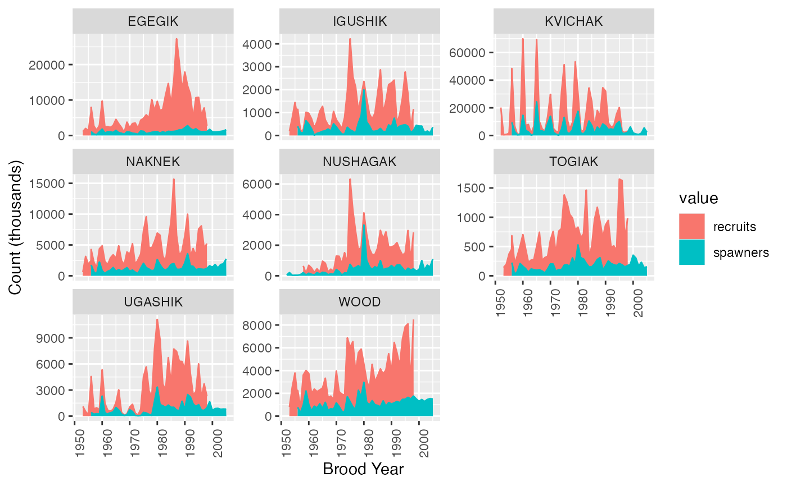

Bristol Bay Sockeye Spawner-Recruit Data
sockeye.RdSpawner-recruit data for sockeye salmon from the KVICHAK, WOOD, IGUSHIK, NAKNEK, EGEGIK, NUSHAGAK, UGASHIK, TOGIAK Rivers.
Usage
data(sockeye)Format
Object of class "data.frame"
brood_year Brood year.
region River.
spawners Spawners (count) in thousands
recruits Recruits (count) in thousands
pdo_summer_t2 Pacific Decadal Oscillation (PDO) from Apr-Sep of brood year $t+2$
pdo_winter_ts Pacific Decadal Oscillation (PDO) from Oct (brood year $t+2$) to Mar (brood year $t+3$)
Details
Spawner-recruit data for sockeye salmon (Oncorhynchus nerka) from the Bristol Bay region in SW Alaska that span the years 1952-2005. The data come from a large public database begun by Ransom Myers many years ago. The database is now maintained as the RAM Legacy Stock Assessment Database.
The R script which created the data can be found in the atsalibrary GitHub site in the inst/orginal_data/sockeye folder.
For convenience in the lab book, KvichakSockeye is also created which is just the Kvichak data.
References
RAM Legacy Stock Assessment Database. 2018. Version 4.44-assessment-only. Released 2018-12-22. Retrieved from DOI:10.5281/zenodo.2542919.
Ricard, D., Minto, C., Jensen, O.P. and Baum, J.K. (2012) Evaluating the knowledge base and status of commercially exploited marine species with the RAM Legacy Stock Assessment Database. Fish and Fisheries 13 (4) 380-398. DOI: 10.1111/j.1467-2979.2011.00435.x
Spawner escapement estimates are originally from: Bristol Bay Area Annual Management Reports from the Alaska Department of Fish and Game and are based on in river spawner counts (tower counts and aerial surveys).
See an example application of these data see: Rogers, L.A. and Schindler, D.E. 2008. Asynchrony in Population Dynamics of Sockeye Salmon in Southwest Alaska. Oikos 117: 1578-1586
Examples
data(sockeye)
a <- pivot_longer(sockeye,
cols=spawners:recruits,
names_to="value",
values_to="count")
ggplot(a,aes(brood_year, count, color=value, fill=value)) +
geom_area() +
theme(axis.text.x = element_text(angle = 90)) +
ylab("Count (thousands)") +
xlab("Brood Year") +
facet_wrap(~region, scales="free_y")
#> Warning: Removed 84 rows containing non-finite values (`stat_align()`).
